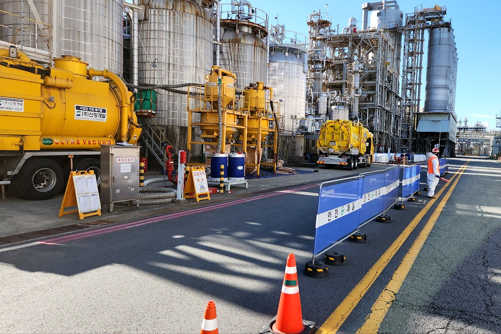
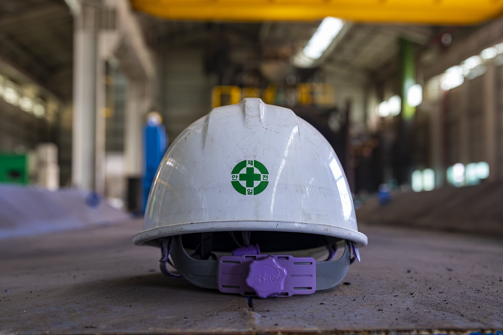
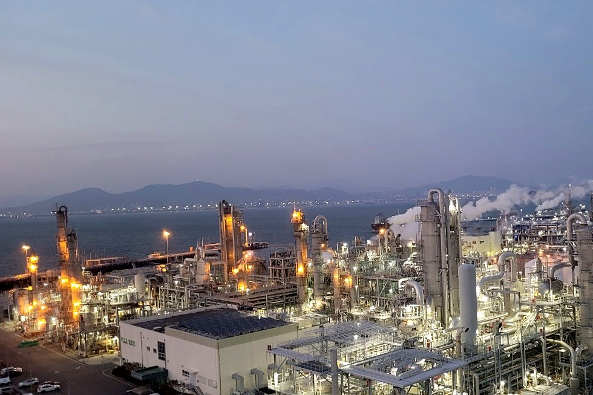

ABOUT US
1992년부터
1992년부터
쌓아 온 현장 경험.
1992년 시작한 신정개발은 산업설비와 환경시설을 다루는 클리닝 전문기업입니다. 설비 유지보수, 촉매·충진물 작업, 준설과 시설 조사·보수의 경험을 바탕으로 현장의 작업 방법을 발전시켜 갑니다.
1992설립
2007법인 전환
2017기업부설연구소 설립
5개 분야다루는 업무
HISTORY
연혁
1992년 신학상사로 출발해 1995년 신정개발로 상호를 바꾸고, 2007년 법인으로 전환했습니다.
- 2023
- 05신용등급 우수기업 인증 (신용등급 BBB-)
- 2021
- 11표창장 — 산업통상자원부
- 2020
- 12기술혁신형 중소기업 인증 (INNOBIZ)
- 11중소기업 경영혁신 공모전 우수상
- 11지역사회 공헌 인정기업 승인
- 2018
- 07서비스분야 안전보건활동 우수사례 대상
- 07위험성평가 인증 — 산업안전보건공단
- 2017
- 11기업부설연구소 설립
- 07경영혁신형 중소기업 인증 (MAINBIZ)
- 06전남형 강소기업 인증
- 05ISO 14001 인증
- 2016
- 05KOSHA 18001 인증
- 2015
- 09기계설비공사업 면허 취득
- 2012
- 12자본금 3억 원 증자
- 2009
- 03난방시공업 1종 면허 취득
- 2007
- 10환경부장관상 수상
- 09법인 전환 — ㈜신정개발
- 2006
- 05지정폐기물 수집·운반 면허 취득
- 2004
- 10일반폐기물 수집·운반 면허 취득
- 2002
- 03상·하수도 설비시공업 면허 취득
- 2000
- 04저수조청소업 등록
- 1995
- 10상호 변경 — 신정개발
- 1992
- 03신학상사 설립

CREDENTIALS면허·인증과
면허·인증과
조직.
신정개발이 보유한 면허·허가·인증과 조직, 기술자격입니다. 인증서 사본이 필요하시면 문의해 주세요.
건설업 면허 · 허가
- 상·하수도설비공사업
- 난방시공업 제1종
- 기계설비공사업
- 일반폐기물 수집·운반업 허가
- 지정폐기물 수집·운반업 허가
- 저수조청소업 등록
경영시스템 · 기업 인증
- ISO 9001:2015 (품질경영)
- ISO 14001:2015 (환경경영)
- KOSHA-MS 안전보건경영시스템 인증
- 위험성평가 인정 (산업안전보건공단)
- 기업부설연구소 인정
- 벤처기업 확인
- INNOBIZ 기술혁신형 중소기업
- MAINBIZ 경영혁신형 중소기업
- 전남형 강소기업
수상 · 특허
- 환경부장관상 (2007)
- 서비스분야 안전보건활동 우수사례 대상 (2018)
- 중소기업 경영혁신 공모전 우수상 (2020)
- 지역사회 공헌 인정기업 (2020)
- 산업통상자원부 표창 (2021)
- 신용등급 우수기업 인증 (2023)
등록 특허 8건 · 출원 4건 (회사소개서 수록). 대표 특허: 정합식 맨홀(2017), 관내부 무인 준설 처리 시스템(2017), 스크류 바퀴를 구비한 수륙양용 준설로봇(2020), 소형관로 준설로봇 및 그 운전방법(2020), 워터젯 유닛을 구비한 세정로봇 장치(2020)
조직 구성
대표이사 아래 경영지원팀 · 안전 · 공무 · 기업부설연구소 · C&M 1팀 · 2팀 · C&S 1팀 · 2팀 · SAP팀으로 구성됩니다. 안전·공무 담당과 기업부설연구소를 별도로 둡니다.
보유 기술자격 (종류)
- 01산업안전기사 · 산업안전산업기사 · 위험물산업기사
- 02토목기사 · 토목 중급/초급기술자 · 기계 중급기술자
- 03가스시설시공관리자 · 난방시공업 인정기능사
- 04용접기능사 · 특수용접기능사 · 설비보전기능사
- 05화학분석기능사 · 건설재료시험기능사 · 전기기능사
- 06굴삭기운전기능사 · 지게차운전기능사 · 건설기계조종사

FIELD & SAFETY
현장과 안전
회사소개서에 적힌 핵심가치는 안전·배려·희망입니다. 안전 구획과 보호구를 갖춘 현장, 그리고 산업단지의 모습입니다.



WHAT WE DO
다루는 업무
산업설비·환경시설 클리닝. 다섯 가지 업무로 산업설비와 환경시설의 현장을 다룹니다.
사업분야 전체 보기CONTACT
연락처
- 회사명
- (주)신정개발 SHINJEONG DEVELOPMENT CO., LTD.
- 설립
- 1992년
- 지사
- 충청남도 서산시 지곡면 충의로 1106 네이버 지도
- 대표 전화
- 061-682-5537 문의 가능 시간 09:00 ~ 17:30
- 팩스
- 061-683-5567
- 사업 범위
- 설비 클리닝 · 촉매·충진물 작업 · 화학세정 · 준설·슬러지 회수 · 관로·지하 조사 및 보수
출처: (주)신정개발 회사소개서(2024) · 기술소개서(2025)
검토가 필요한 현장을
알려 주세요.
대상 설비와 작업 목적, 희망 일정을 보내 주시면 검토에 필요한 정보를 함께 확인하겠습니다.